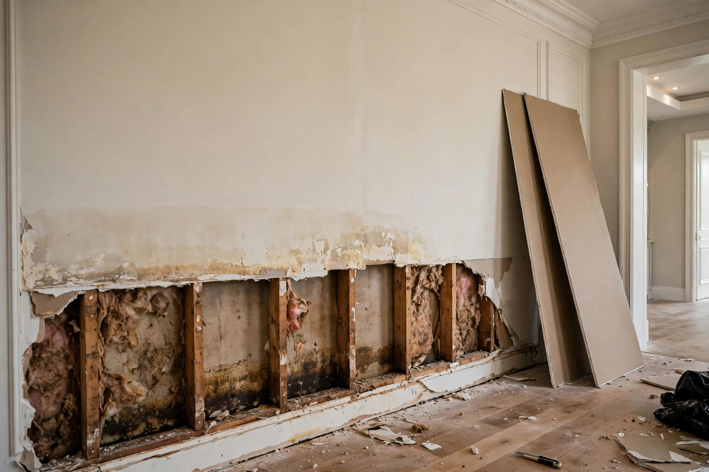

Water Damaged Drywall Repair in Eagle, ID
Drywall is gypsum wrapped in paper — and that paper is mold food. Once it's been soaked, the question isn't whether to patch it, but how high to cut and how dry the studs need to be before new board goes up.

Straight answers
How high should a flood cut go?
Above the highest visible waterline or wicking mark, plus a safety margin — typically 12 to 24 inches from the floor. The goal is removing all compromised material in one clean cut. Call (321) 985-3339 and we'll assess yours.
Can wet drywall be dried instead of replaced?
If it got briefly damp and dried within a day or two with no swelling or mold, sometimes. But drywall that stayed wet, swelled, or shows any growth must come out — the EPA recommends removing moldy porous materials rather than attempting to clean them.
How long before new drywall goes up?
Only when moisture meters confirm the studs and remaining materials are at dry standards — usually 2-4 days of active drying. Rushing this step is the most common cause of repeat mold problems.
Will you have to remove my baseboards?
Almost always, yes — water wicks behind them and they trap moisture against the wall. Good news: baseboards are reusable if they're solid wood and dried properly. MDF baseboards that swelled will need replacing.
Do you handle the painting too?
Yes — the job isn't done until the wall looks like nothing happened. That means tape, texture matched to your finish, primer, and paint. For Eagle's upgraded textures, matching is skilled work we don't rush.
When drywall is beyond saving
Soft or crumbling
Press the wall gently. If it gives, dents easily, or crumbles, the gypsum core has lost its integrity. No amount of drying restores it — it has to be replaced.
Visible mold on the paper
Dark spotting on drywall paper means the colony is established in the material. Surface cleaning doesn't reach into gypsum. Cut it out.
Swelling or bubbling
Drywall that swells or bubbles has absorbed significant water. Even if it dries, the shape is ruined and the paper facing is compromised.
An Eagle homeowner's dishwasher supply line leaks slowly for weeks before anyone notices the kitchen baseboards swelling. By the time it's found, the drywall behind the cabinets is soft two feet up. The repair: cabinets carefully detached, flood cut at 24 inches, wet insulation removed, studs dried over three days, then new drywall, texture, and paint. The cabinets go back on walls that are actually dry.
Not all drywall is equal
What was on your walls affects both the damage pattern and the repair approach.
Standard drywall
Paper-faced gypsum — the most common and the most vulnerable. Once the paper stays wet, mold has its food source. Replacement is the only reliable fix for saturated sections.
Moisture-resistant board
Green or purple board in bathrooms and laundry rooms resists surface moisture better, but it's not waterproof. Prolonged soaking defeats it the same way.
Plaster and lath
Rare in Eagle's newer homes, but some remodels have it. Plaster handles brief wetting better than drywall — but the wood lath behind it can rot and grow mold if drying is delayed.
How drywall repair should work
There's a right way to do this, and it starts with respecting what water does to gypsum.
- Flood cuts at a straight line — we cut above the highest wicking mark, usually 12-24 inches, along a level line that's easy to rebuild.
- Studs dry before closing — moisture meters verify framing is back to normal levels. Closing wet walls traps tomorrow's mold.
- Insulation gets replaced — wet fiberglass loses its R-value and won't dry inside a wall. It comes out with the drywall.
- New board, tape, texture, paint — the full finish sequence, matched to your existing walls.
Matching high-end walls
Eagle homes often feature upgraded wall finishes — smooth trowel, custom textures, accent walls. A repair that doesn't match sticks out permanently. We take texture matching as seriously as the structural work.
Walls soft or swelling?
One call. Tell us which walls and what happened, and we'll map out the repair.